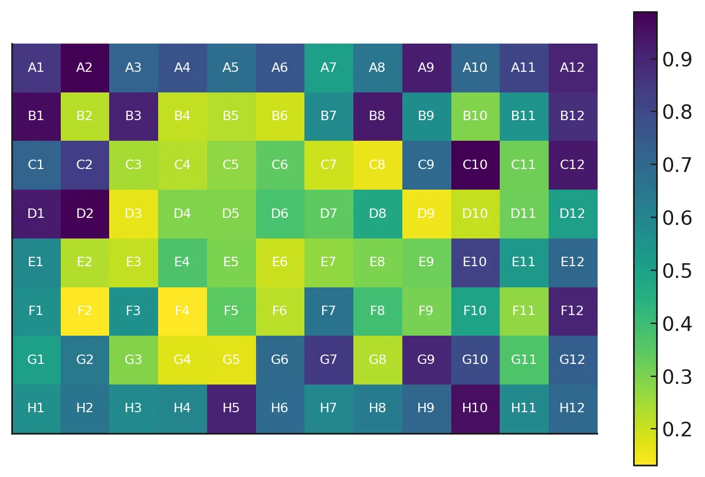
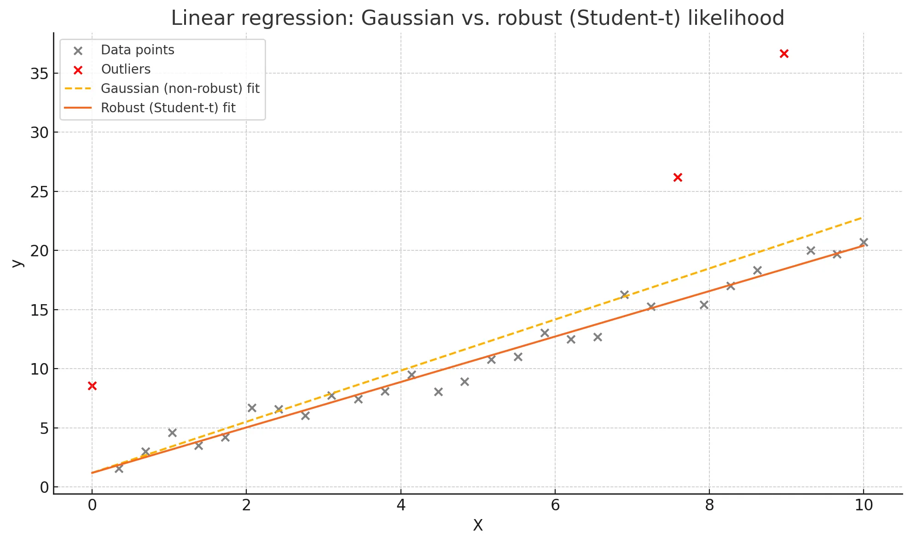

written by Eric J. Ma on 2025-04-05 | tags: automation bayesian estimation robust estimation r2d2 experiment design
A high-throughput screening lab transforms their data analysis workflow by applying statistical thinking from the start. By combining robust estimation with R2D2 priors, they eliminate tedious manual data cleaning, automatically handle outliers, decompose sources of variation, and objectively measure both statistical estimation model and laboratory quality performance. This story demonstrates how thoughtful experimental design paired with principled statistical methods can dramatically improve both efficiency and scientific quality. How might statistical thinking transform your experimental workflow?
Dr. Chen's team was drowning in spreadsheets. Again.
"I don't understand why these position effects keep showing up," muttered Li, the senior scientist, as she manually flagged another set of outlier wells on their latest assay. "We're spending more time cleaning data than running experiments."
Their high-throughput screening lab had followed the same workflow for years: carefully plan the biological aspects, run plate-based assays, then spend days wrestling with the resulting data before any actual analysis could begin.
"Remember when that vendor rep insisted we put all our controls in column 1?" remarked Jamal, gesturing to their plate layout diagram. "Said their software couldn't handle distributed controls?"
The team nodded grimly. That single decision had cascaded into countless hours of manual data correction as edge effects and position-dependent variations routinely skewed their results. Their analysis scripts had evolved into a jungle of if-else statements attempting to address every new edge case.
When they approached the research digital team about automating their analysis pipeline, the response was disheartening but predictable.
"This can't be automated reliably," Maya, the team's embedded data scientist from the research digital team, explained. "There are too many subjective decisions buried in your process. We'd just be encoding your workarounds, not solving the actual problems."
The breakthrough came during a seminar on Bayesian statistics. Dr. Chen realized their problem wasn't poor analysis—it was addressing experimental design flaws after data collection instead of preventing them from the start.
"What if we completely reimagined our workflow?" he proposed at the next team meeting. "Rather than retrofitting solutions to poorly designed experiments, we could address these problems before they occur."
The team was skeptical. Their current approach, despite its flaws, was familiar. But the hours spent manually curating data had become unsustainable, and they knew something had to change.
Dr. Chen decided to reach out to Maya again. "I know you said our current workflow can't be reliably automated," he explained, "but we're ready to rebuild from the ground up. Would you consider working more closely with us?"
Maya hesitated. "What's different this time?"
"We're not trying to automate our existing process anymore," Dr. Chen explained. "We want to redesign our experiments with statistical principles from the start."
Maya's expression changed. As a data scientist, she'd spent years trying to salvage analyses from poorly designed experiments. The opportunity to shape the experimental design itself was rare.
"That changes everything," she said, nodding slowly. "If you're willing to rethink your plate layouts and measurement protocols based on statistical considerations... I'm in."
Maya agreed, intrigued by the opportunity to apply statistical principles from the beginning rather than patching an existing system.
Their transformation began with mapping the sources of variation in their experiments:
First, they tackled the position effects problem. Against the vendor's recommendations, they designed a distributed control system, placing reference samples strategically throughout each plate rather than restricting them to dedicated columns.
"But the software can't handle this layout," protested Li, recalling the vendor's warning.
"Then we'll write our own analysis scripts," Dr. Chen countered. "One that treats position effects as systematically measurable phenomena rather than nuisance variables."
They ran several plates with only control samples to create a detailed map of well position biases. The results were striking.
"Look at this heatmap," Maya pointed out during their analysis review. "It's not just the column 1 effect we've been fighting. The entire plate edge shows elevated values compared to the center wells."

"The edge wells are consistently showing higher values," Dr. Chen observed, tracing the dark purple regions along the perimeter of the plate. "And it's not uniform—some corners are worse than others."
This visualization became the foundation for a hierarchical Bayesian model that could account for position-specific variation while maximizing plate space for test samples.
"Now we can quantify and correct for these position effects systematically," Maya explained. "Rather than manually flagging outliers, we're modeling the actual physical phenomena causing the variation."
Next, they addressed their outlier problem. Instead of manually flagging extreme values—a process fraught with subjectivity—they needed a more principled approach.
"I've been reading about robust statistical methods," Jamal shared during a team meeting. "What if we use t-distributed rather than Gaussian residuals in our model?"
He pulled up a figure from a Bayesian statistics handbook. "Look at this comparison between standard Gaussian regression and robust regression using Student-t likelihood."

"See how the outliers—these red X marks—pull the standard regression line way off?" Jamal explained. "But the robust approach stays true to the actual trend. We could apply this same principle to our plate data."
"So the model effectively down-weights outliers based on their probability," Dr. Chen summarized, "which means we don't have to manually decide what's an outlier anymore."
"Exactly," Jamal nodded. "The heavier tails of the t-distribution naturally accommodate occasional extreme values."
It was a few weeks later that Maya made another crucial contribution. After attending a computational statistics conference, she returned excited about a novel approach.
"I just learned about something called the R2D2 prior," she announced during their weekly meeting. "It could be perfect for our situation and would complement the robust estimation approach Jamal introduced."
The team looked at her blankly.
"R2-D2? Like the Star Wars robot?" asked Li with a skeptical smile.
Maya laughed. "R2D2 stands for 'R-squared Dirichlet Distribution.' It's a statistical prior that could elegantly solve several of our problems at once."
"Is there a practical implementation?" Jamal asked. "Or is this just theoretical?"
"Actually, I found a great implementation in PyMC," Maya replied, pulling up her laptop. "There's even a detailed tutorial online about using it for protein screening experiments - very similar to our work. I can share the link with everyone."
She explained how the R2D2 prior could be combined with their robust estimation approach to yield three major benefits:
"First, while Jamal's t-distribution handles outliers in the measurements themselves, the R2D2 prior works on a different level - it provides a principled way to model the variances in our system," Maya explained, sketching a diagram on the whiteboard. "Second, R2D2 provides automatic variance decomposition, which means we can quantify how much variation comes from different sources—plate position, reagent batch, technician, or true biological signal."
AI-generated photo of Maya explaining the R2D2 prior to the team, with Dr. Chen sneaking a glance at the photographer.
"And the third benefit?" Dr. Chen asked.
"It gives us a built-in measure of model performance," Maya replied. "We can objectively evaluate how well our statistical approach is working without circular reasoning."
"So the t-distribution and R2D2 prior are complementary?" Jamal asked.
"Exactly," Maya nodded. "The t-distribution makes our model robust against outliers in individual measurements, while the R2D2 prior helps us understand and decompose the sources of variation across the entire experiment. Together, they give us a complete statistical framework."
The team was intrigued but cautious. "This sounds promising, but will it actually work with our messy biological data?" Jamal asked.
"Let's find out," Maya suggested. "I can implement a prototype using our control plate data."
Maya spent several days meticulously analyzing their historical data, cataloging the different patterns of outliers and position effects that had appeared over the past year.
"I want to make sure our model accounts for all the edge cases we've seen before," she explained to the team. "If we build it right the first time, we won't need to keep patching it later."
Her careful preparation paid off. When she finally implemented the initial model combining the t-distribution likelihood with the R2D2 prior, it captured nearly all the patterns they'd observed in their historical data. The statistical framework was sound from the start.
"The model looks great conceptually," Jamal observed as they reviewed the first results. "But it's taking almost an hour to run for a single plate."
Maya nodded. "The computational efficiency needs work, but the statistical model itself is solid. We're already capturing the position effects and handling outliers correctly." She made a few targeted optimizations to the sampling approach, preserving the core statistical properties while dramatically reducing computation time.
There were adjustments needed on the experimental side too. Lab technicians accustomed to the old workflow initially questioned the more distributed control layout. "It feels wrong to put controls in the middle of the plate," one technician admitted. But as they saw the resulting data quality improvements, skepticism quickly gave way to enthusiasm.
Six months after implementing their new approach, the transformation was undeniable.
"I haven't manually excluded a well in weeks," Li remarked during their progress meeting. What once required hours of subjective decision-making now happened automatically through their robust statistical framework.
The robust R2D2 model had delivered on its promise. Outliers were now handled systematically rather than subjectively. The variance decomposition revealed that nearly 30% of their measurement variation came from plate position effects - knowledge that helped them further refine their experimental design.
Perhaps most surprisingly, the model performance metrics highlighted which assays were most reliable and which needed further optimization. This led to targeted improvements in their least robust protocols.
Their analysis pipeline ran without manual intervention, eliminating tedious data cleaning sessions. Scientists were freed to focus on interpretation rather than data wrangling. Reproducibility improved dramatically when analysis decisions were encoded in statistical models rather than arising from individual choices.
Maya, initially hesitant to automate their process, was now a regular collaborator. "This is exactly how statistical methods should be applied," she told Dr. Chen. "Built into the experimental design from day one, not tacked on as an afterthought."
The resulting system preserved hierarchical relationships between samples and maintained proper uncertainty quantification throughout.
Looking back, Dr. Chen's team realized their most powerful statistical tool wasn't sophisticated software or advanced algorithms—it was thoughtful experimental design from the very beginning, combined with principled statistical methods like the R2D2 prior.
By anticipating sources of variation upfront and building robust statistical approaches, they had not only saved countless hours but had fundamentally improved the quality of their science.
Their experience demonstrates a powerful truth: experiments designed with analysis in mind produce cleaner data from the start. The extra effort at the bench, coupled with the right statistical framework, translated to exponential savings throughout the data lifecycle.
For research teams facing similar challenges, the lesson is clear—statistical thinking should inform your initial experimental approach rather than serving as an afterthought. Your future self will thank you for the foresight!
@article{
ericmjl-2025-from-data-chaos-to-statistical-clarity-a-laboratory-transformation-story,
author = {Eric J. Ma},
title = {From data chaos to statistical clarity: A laboratory transformation story},
year = {2025},
month = {04},
day = {05},
howpublished = {\url{https://ericmjl.github.io}},
journal = {Eric J. Ma's Blog},
url = {https://ericmjl.github.io/blog/2025/4/5/from-data-chaos-to-statistical-clarity-a-laboratory-transformation-story},
}
I send out a newsletter with tips and tools for data scientists. Come check it out at Substack.
If you would like to sponsor the coffee that goes into making my posts, please consider GitHub Sponsors!
Finally, I do free 30-minute GenAI strategy calls for teams that are looking to leverage GenAI for maximum impact. Consider booking a call on Calendly if you're interested!